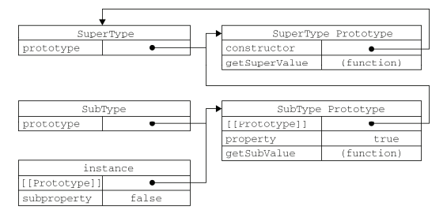
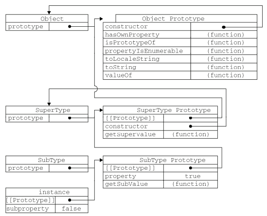

继承（高3 P162）
原型链
function SuperType(){ this.property = true; } SuperType.prototype.getSuperValue = function(){ return this.property; }; function SubType(){ this.subproperty = false; } //继承了 SuperType SubType.prototype = new SuperType(); SubType.prototype.getSubValue = function (){ return this.subproperty; }; var instance = new SubType(); console.log(instance.getSuperValue()); //true

在上面的代码中，我们没有使用 SubType 默认提供的原型，而是给它换了一个新原型； 这个新原型就是 SuperType 的实例。于是，新原型不仅具有作为一个 SuperType 的实例所拥有的全部属性和方法， 而且其内部还有一个指针，指向了 SuperType 的原型。最终结果就是这样的： instance 指向 SubType 的原型， SubType 的原型又指向 SuperType 的原型。 此外，要注意 instance.constructor 现在指向的是 SuperType，这是因为原来 SubType.prototype 中的 constructor 重写了的缘故。 通过实现原型链，本质上扩展了原型搜索机制。 当以读取模式访问一个实例属性时，首先会在实例中搜索该属性。如果没有找到该属性，则会继续搜索实例的原型。 在通过原型链实现继承的情况下，搜索过程就得以沿着原型链继续向上。 就拿上面的例子来说，调用 instance.getSuperValue() 会经历三个搜索步骤： 1）搜索实例； 2）搜索 SubType.prototype； 3）搜索 SuperType.prototype，最后一步才会找到该方法。 在找不到属性或方法的情况下，搜索过程总是要一环一环地前行到原型链末端才会停下来。
别忘记默认的原型
所有函数的默认原型都是 Object 的实例，因此默认原型都会包含一个内部指针，指向 Object.prototype。 这也正是所有自定义类型都会继承 toString()、valueOf()等默认方法的根本原因。 下面展示该例子中完整的原型链：

确定原型和实例的关系
1）instanceof alert(instance instanceof Object); //true alert(instance instanceof SuperType); //true alert(instance instanceof SubType); //true 2）isPrototypeOf alert(Object.prototype.isPrototypeOf(instance)); //true alert(SuperType.prototype.isPrototypeOf(instance)); //true alert(SubType.prototype.isPrototypeOf(instance)); //true
借用构造函数
这种技术的基本思想相当简单，即在子类型构造函数的内部调用超类型构造函数。 function SuperType(){ this.colors = ["red", "blue", "green"] } function SubType(){ // 继承了 SuperType SuperType.call(this); } var instance1 = new SubType(); instance1.colors.push("black"); alert(instance1.colors); //"red,blue,green,black" var instance2 = new SubType(); alert(instance2.colors); //"red,blue,green" 1.传递参数 function SuperType(name){ this.name = name; } function SubType(){ //继承了 SuperType，同时还传递了参数 SuperType.call(this, "Nicholas"); //实例属性 this.age = 29; } var instance = new SubType(); alert(instance.name); //"Nicholas"; alert(instance.age); //29
组合继承
将原型链和借用构造函数的技术组合到一块，其背后的思路是使用原型链实现对原型属性和方法的继承， 而通过借用构造函数来实现对实例属性的继承。这样，既通过在原型上定义方法实现了函数复用， 又能够保证每个实例都有它自己的属性。 function SuperType(name){ this.name = name; this.colors = ["red", "blue", "green"]; } SuperType.prototype.sayName = function(){ alert(this.name); } function SubType(name, age){ // 继承 SuperType 属性 SuperType.call(this, name) this.age = age } SubType.prototype = new SuperType() SubType.prototype.constructor = SubType SubType.prototype.sayAge = function(){ alert(this.age); } var instance1 = new SubType("Nicholas", 29); instance1.colors.push("black"); alert(instance1.colors); //"red,blue,green,black" instance1.sayName(); //"Nicholas"; instance1.sayAge(); //29 var instance2 = new SubType("Greg", 27); alert(instance2.colors); //"red,blue,green" instance2.sayName(); //"Greg"; instance2.sayAge(); //27 组合继承避免了原型链和借用构造函数的缺陷，融合了它们的优点，成为 JavaScript 中最常用的继承模式。 而且，instanceof 和 isPrototypeOf()也能够用于识别基于组合继承创建的对象。
原型式继承
1. function object(o){ function F(){} F.prototype = o; return new F(); } var person = { name: "Nicholas", friends: ["Shelby", "Court", "Van"] }; var anotherPerson = object(person); anotherPerson.name = "Greg"; anotherPerson.friends.push("Rob"); var yetAnotherPerson = object(person); yetAnotherPerson.name = "Linda"; yetAnotherPerson.friends.push("Barbie"); console.log(person.friends); // ["Shelby", "Court", "Van", "Rob", "Barbie"] 2.Object.create()方法（ecma262v5支持） 规范化了原型式继承 var person = { name: "Nicholas", friends: ["Shelby", "Court", "Van"] } var anotherPerson = Object.create(person) anotherPerson.name = "Greg"; anotherPerson.friends.push("Rob"); var yetAnotherPerson = Object.create(person); yetAnotherPerson.name = "Linda"; yetAnotherPerson.friends.push("Barbie"); console.log(person.friends); // ["Shelby", "Court", "Van", "Rob", "Barbie"] 此时，与 object() 方法效果一致。 Object.create()方法的第二个参数与Object.defineProperties()方法的第二个参数格式相同：每个属性都是通过自己的描述符定义的。 以这种方式指定的任何属性都会覆盖原型对象上的同名属性。如下： var person = { name: "Nicholas", friends: ["Shelby", "Court", "Van"] } var anotherPerson = Object.create(person, { name: { value: "Greg" } }) console.log(anotherPerson.name) // "Greg"
寄生组合式继承
function object(o){ function F(){} F.prototype = o; return new F(); } function inheritPrototype(subType, superType){ var prototype = object(superType.prototype); //创建对象 prototype.constructor = subType; //增强对象 subType.prototype = prototype; //指定对象 } function SuperType(name){ this.name = name this.colors = ["red", "blue", "green"] } SuperType.prototype.sayName = function(){ console.log(this.name) } function SubType(name, age){ SuperType.call(this, name) this.age = age } inheritPrototype(SubType, SuperType); SubType.prototype.sayAge = function(){ console.log(this.age) } 这个例子的高效率体现在它只调用了一次 SuperType 构造函数，并且因此避免了在 SubType.prototype 上面创建不必要的、多余的属性。 与此同时，原型链还能保持不变；因此，还能够正常使用 instanceof 和 isPrototypeOf()。 开发人员普遍认为寄生组合式继承是引用类型最理想的继承范式。